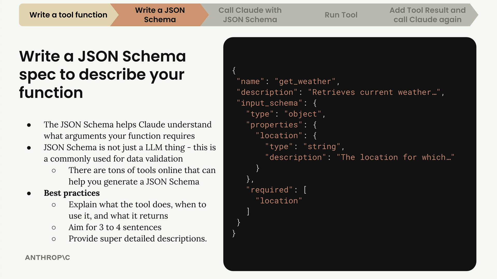
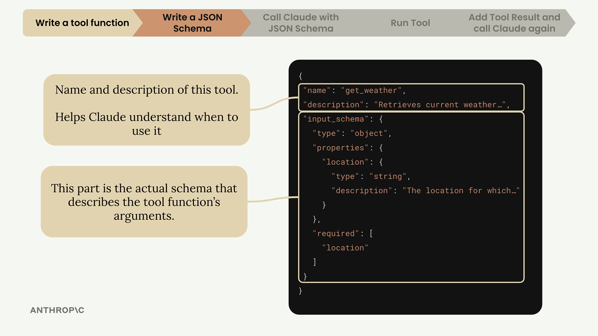
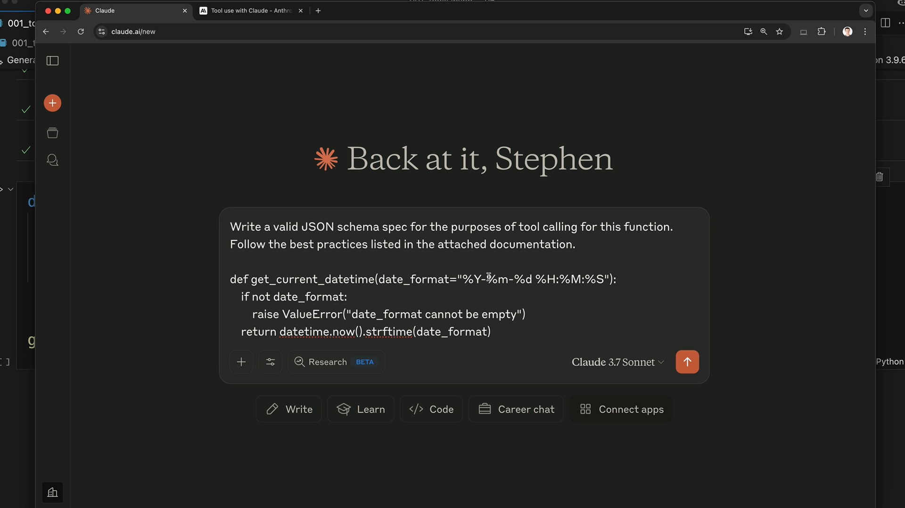

도구 스키마
도구 함수를 작성한 후, 다음 단계는 함수가 어떤 인수를 기대하고 어떻게 사용해야 하는지 Claude에게 알려주는 JSON 스키마를 만드는 것입니다. 이 스키마는 Claude가 도구를 언제, 어떻게 호출할지 이해하기 위해 읽는 문서 역할을 합니다.
JSON 스키마 이해하기
JSON 스키마는 AI나 도구 호출에만 특정된 것이 아닙니다. 수년간 사용되어 온 널리 사용되는 데이터 유효성 검사 사양입니다. AI 커뮤니티에서 채택한 이유는 함수 매개변수를 설명하고 데이터를 검증하는 데 편리한 방법이기 때문입니다.

완전한 도구 명세는 세 가지 주요 부분으로 구성됩니다:
- name - 도구에 대한 명확하고 설명적인 이름 (예: "get_weather")
- description - 도구가 하는 일, 언제 사용해야 하는지, 무엇을 반환하는지
- input_schema - 함수의 인수를 설명하는 실제 JSON 스키마
효과적인 설명 작성하기
도구 설명은 Claude가 함수를 언제 사용할지 이해하는 데 매우 중요합니다. 권장 사항은 다음과 같습니다:
- 도구가 하는 일을 설명하는 3-4개의 문장을 목표로 하세요
- Claude가 언제 사용해야 하는지 설명하세요
- 어떤 종류의 데이터를 반환하는지 설명하세요
- 각 인수에 대한 상세한 설명을 제공하세요

스키마를 쉽게 생성하는 방법
JSON 스키마를 처음부터 작성하는 대신, Claude 자체를 사용하여 생성할 수 있습니다. 다음은 그 과정입니다:
- 도구 함수 코드를 복사하세요
- Claude에 가서 도구 호출을 위한 JSON 스키마를 작성해달라고 요청하세요
- 도구 사용에 관한 Anthropic 문서를 컨텍스트로 포함하세요
- Claude가 권장 사항에 따라 올바르게 형식화된 스키마를 생성하도록 하세요
프롬프트는 다음과 같아야 합니다: "이 함수의 도구 호출 목적으로 유효한 JSON 스키마 명세를 작성해 주세요. 첨부된 문서에 나열된 권장 사항을 따르세요."

코드에 스키마 구현하기
Claude가 스키마를 생성하면, 코드 파일에 복사하세요. 다음은 따르기 좋은 명명 패턴입니다:
def get_current_datetime(date_format="%Y-%m-%d %H:%M:%S"):
if not date_format:
raise ValueError("date_format cannot be empty")
return datetime.now().strftime(date_format)
get_current_datetime_schema = {
"name": "get_current_datetime",
"description": "Returns the current date and time formatted according to the specified format",
"input_schema": {
"type": "object",
"properties": {
"date_format": {
"type": "string",
"description": "A string specifying the format of the returned datetime. Uses Python's strftime format codes.",
"default": "%Y-%m-%d %H:%M:%S"
}
},
"required": []
}
}
스키마를 정리하고 해당 함수와 쉽게 매칭할 수 있도록 function_name 뒤에 function_name_schema를 붙이는 패턴을 사용하세요.
타입 안전성 추가하기
더 나은 타입 검사를 위해 Anthropic 라이브러리에서 ToolParam 타입을 가져와 사용하세요:
from anthropic.types import ToolParam
get_current_datetime_schema = ToolParam({
"name": "get_current_datetime",
"description": "Returns the current date and time formatted according to the specified format",
# ... rest of schema
})기능에 엄격하게 필요한 것은 아니지만, 이렇게 하면 Claude의 API와 함께 스키마를 사용할 때 타입 오류를 방지하고 코드를 더 견고하게 만들 수 있습니다.